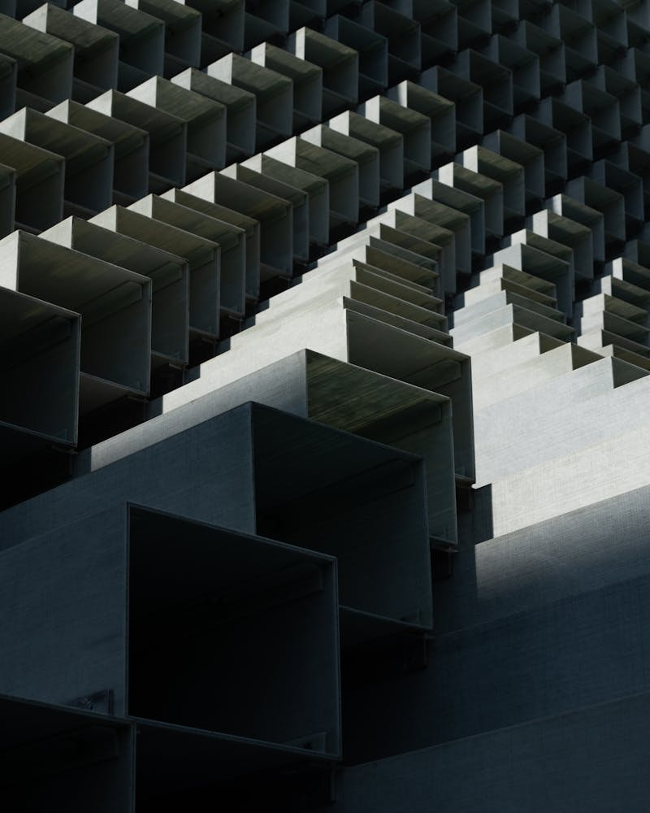
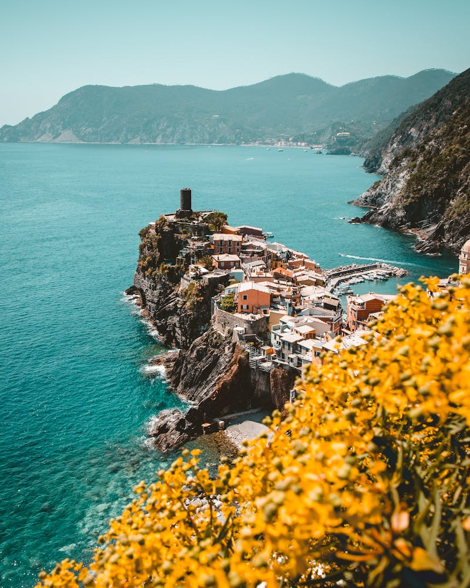

一、阿克萨洪水：点燃中东火药桶

2023年10月7日，哈马斯从加沙地带对以色列发动代号"阿克萨洪水"的突然袭击，约1,200名以色列人死亡。以色列随即宣布进入战争状态，对加沙发动大规模军事行动。
这场冲突迅速从加沙蔓延至整个中东。黎巴嫩真主党从北方向以色列开火，也门胡塞武装封锁红海航线，伊拉克什叶派民兵攻击美军基地。伊朗领导的"抵抗轴心"全面激活，中东多线冲突同时爆发。
伊朗在中东构建的盟友网络被称为"抵抗轴心"（Axis of Resistance），包括黎巴嫩真主党、巴勒斯坦哈马斯和伊斯兰圣战组织、也门胡塞武装、伊拉克什叶派民兵。这个从波斯湾延伸到地中海的联盟，是伊朗对抗美以的前沿力量。
二、2024：以伊直接交锋
2024年是以色列与伊朗从代理人战争走向直接军事对抗的转折年。
到2024年底，以色列已经全面打击了伊朗的地区盟友——加沙的哈马斯、黎巴嫩的真主党高层被系统性清除，包括真主党领导人纳斯鲁拉在内的大量指挥官被暗杀。伊朗的"抵抗轴心"遭到前所未有的重创。
三、十二日战争：2025年6月
2025年6月13日，以色列对伊朗多地发动大规模空袭，轰炸伊朗核设施和军事目标。美国空袭伊朗三处核设施作为配合。这场持续12天的战争是美国首次直接军事打击伊朗本土。
6月24日停火协议生效。但战争的创伤和仇恨已经无法抹去。正在进行的第五轮伊美核谈判也因此中断。
十二日战争是2026年全面战争的直接序曲。它证明了美以愿意且有能力军事打击伊朗本土，也让伊朗认识到自身的脆弱。内忧外患之下，伊朗的抵抗意志和报复决心同时被激化。
四、五轮谈判：和平的窗口
2025年4月至5月，伊朗和美国在阿曼和意大利进行了五轮间接核谈判——双方代表坐在不同房间，通过中间人传递信息。
六轮谈判原定于2025年6月15日在马斯喀特举行。但6月13日，以色列发动空袭。阿曼外交大臣发文：谈判"将不再举行"。

五、内乱：伊朗的至暗时刻
2025年12月28日，伊朗多座城市爆发大规模示威游行。最初源于民众对通货膨胀、食品价格上涨和里亚尔暴跌的不满，但迅速从经济诉求演变为要求推翻现政权的政治运动。
长年经济制裁+十二日战争的创伤+核设施被摧毁的屈辱——多重因素叠加，伊朗社会的承受力到达极限。内忧外患，政权面临前所未有的挑战。
而在大洋彼岸，这场内乱被视为"天赐良机"。
六、军事集结：最后的倒计时
2026年1月起，美国开始在中东进行自2025年十二日战争以来最大规模的军事集结。
2026年1月28日，特朗普公开宣布："一支庞大的舰队正前往伊朗。"他强调"伊朗不能拥有核武器"，希望伊朗"迅速坐到谈判桌前"。
然而，在军事威胁的同时，谈判的窗口并未完全关闭：
2026年2月28日凌晨，美国和以色列联合发动代号"Operation Epic Fury"的大规模空袭。在"历史性协议触手可及"的宣言之后仅72小时，炸弹落在了德黑兰。
一边谈判，一边集结兵力；一边释放和平信号，一边准备毁灭性打击。这是一场在谈判桌上策划的战争。
从2023年阿克萨洪水到2026年2月28日，这条升级链条的逻辑清晰而残酷：每一次危机都在压缩和平的空间，每一次报复都在抬高下一次冲突的烈度。伊朗的内外交困让美以看到了窗口期，而谈判不过是战争准备的掩护。当伊朗外长说出"触手可及"四个字的时候，命运已经写好了。